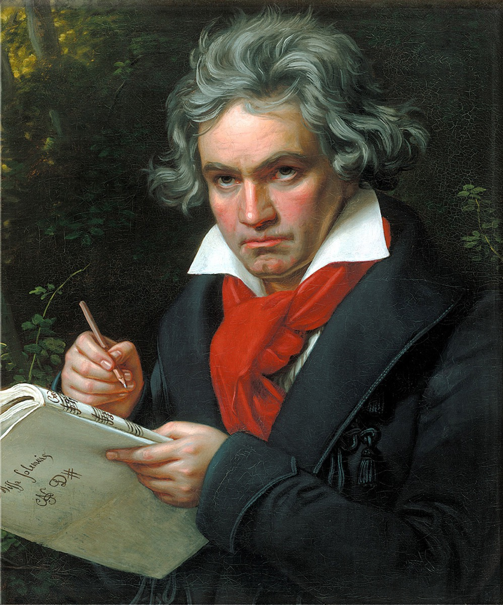

'Not a brook but a sea': Beethoven raised on the 48

Beethoven enters the historical record holding a volume of Bach. His first appearance in print — a notice in Cramer's Magazin der Musik, 1783 — introduces a twelve-year-old in Bonn who "plays chiefly The Well-Tempered Clavier of Sebastian Bach, which Herr Neefe put into his hands," and calls the collection what the trade already knew it to be: a non plus ultra, the summit of the art. Read that sentence slowly and the whole strange economy of the eclipse falls open. The book it names was unpublished — Beethoven learned it, as every keyboard player of the era did, from manuscript copies passed hand to hand, professional to student. Yet a provincial court organist in Bonn owned one; he judged it the right diet for a prodigy; and a journalist writing for the general musical public expected his readers to recognize the title without explanation. Invisible to the public, canonical to the trade: the eclipse in a single press clipping.
Herr Neefe's assignment took. Bach never left Beethoven — not in Vienna, where he played the 48 in van Swieten's circle (the Baron demanding fugues "as an evening blessing" before the company could disperse); not in the sketchbooks, which quote and wrestle with Bach across the decades; and not at the end, where the engagement stops being homage and becomes inheritance. The late works — the Hammerklavier's fugue, the Missa Solemnis, the Diabelli Variations (answering the Goldbergs across seventy years), the Grosse Fuge — take up what had been late Bach's own unfinished project: the fusion of strict counterpoint with the modern style, carried now into a new century and pressed past the edge of the age's comprehension. The boy who was fed the 48 spent his last years writing its sequel in his own language.
And it is from this lifelong intimacy that the era's most famous Bach sentence comes down to us. "Nicht Bach, sondern Meer sollte er heißen" — not Brook but Sea should he be called, punning on the German Bach, brook. The remark is attributed to Beethoven through his circle around 1801, and the timeline flags it honestly: imperfectly sourced, tradition. But like the best of the tradition-flagged material, it is perfectly representative even if the wording is polished — because for Beethoven's generation of professionals, that was simply the settled view. The public had not yet been told; the practitioners already lived in the sea.
Beethoven's part in the story has one more, quieter chapter, easy to miss beside the aphorisms. When the first collected editions of Bach began to appear around 1800, he subscribed toward them and pressed publishers for more. This is the underground relay — students to salon, salon to prodigy — turning at last into commerce: the manuscript samizat of eighty years becoming print, in the eclipse's final decade, with the age's most famous composer as a paying customer and lobbyist. Private devotion was becoming public infrastructure.
Taken together with Mozart's Sundays and the Leipzig motet, this card completes the eclipse's underground genealogy, and the conclusion deserves to be stated plainly: Mozart and Beethoven were both formed by Bach before any public revival existed. The two composers who built the classical style's summit had the old cantor's counterpoint in the basement of everything they made. So when 1829 arrives and Berlin weeps over a resurrected Passion, understand the event precisely: the "rediscovery" did not overturn the profession's verdict — it ratified what the art's practitioners had known, continuously, all along. That is reception history's recurring shape, and it is worth carrying forward into the modern arc: the professionals lead, the public follows, and the legend, written afterward, reverses the order.
Continue with the era essay: The Eclipse: 1750–1829, or step into the room where the relay ran: Sundays at van Swieten's.
Cramer's Magazin der Musik, 1783
The 'Meer' remark (attributed, 1801 circle; tradition)
→ full bibliography & links